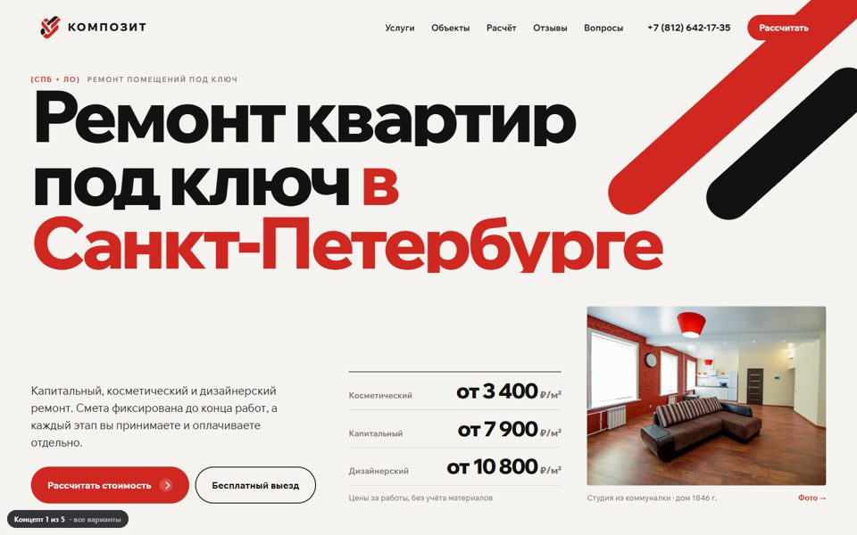
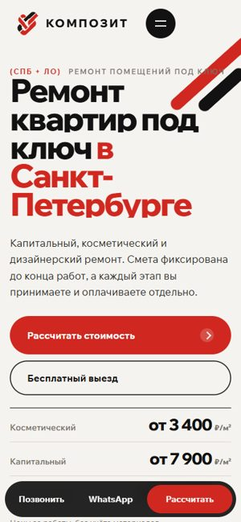
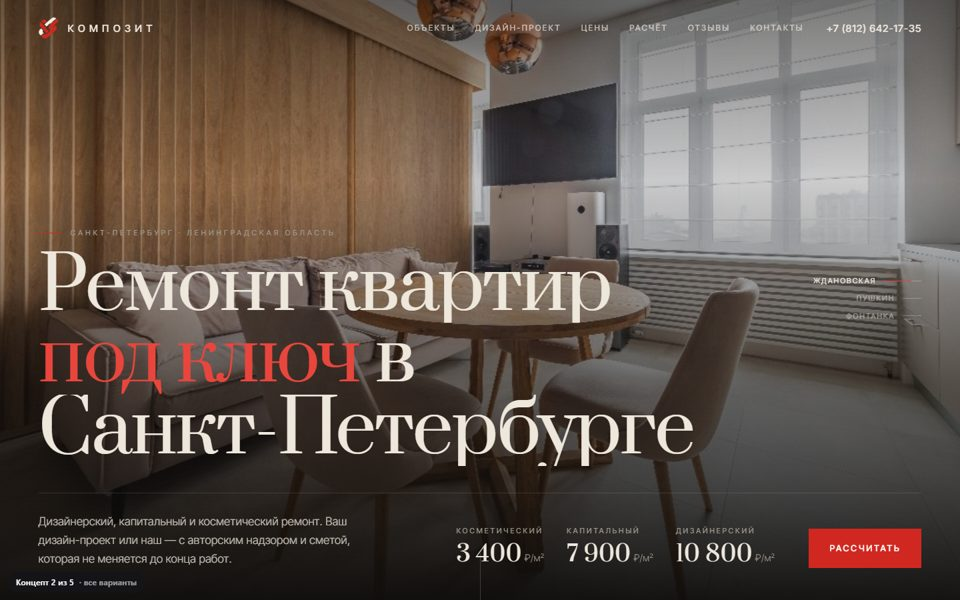
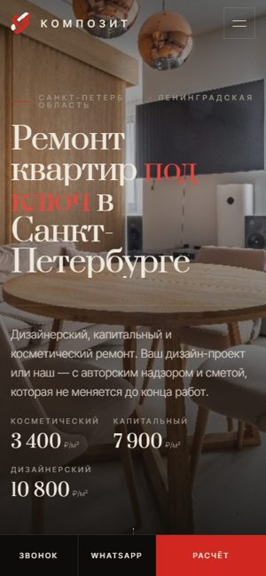
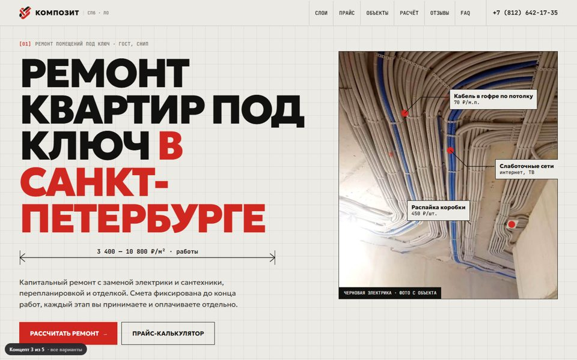
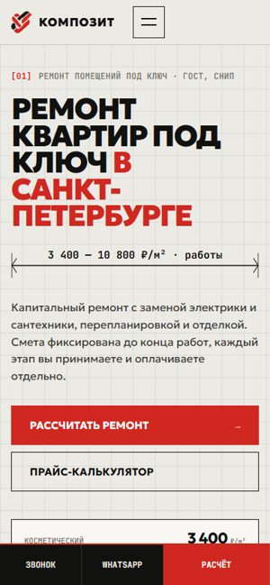
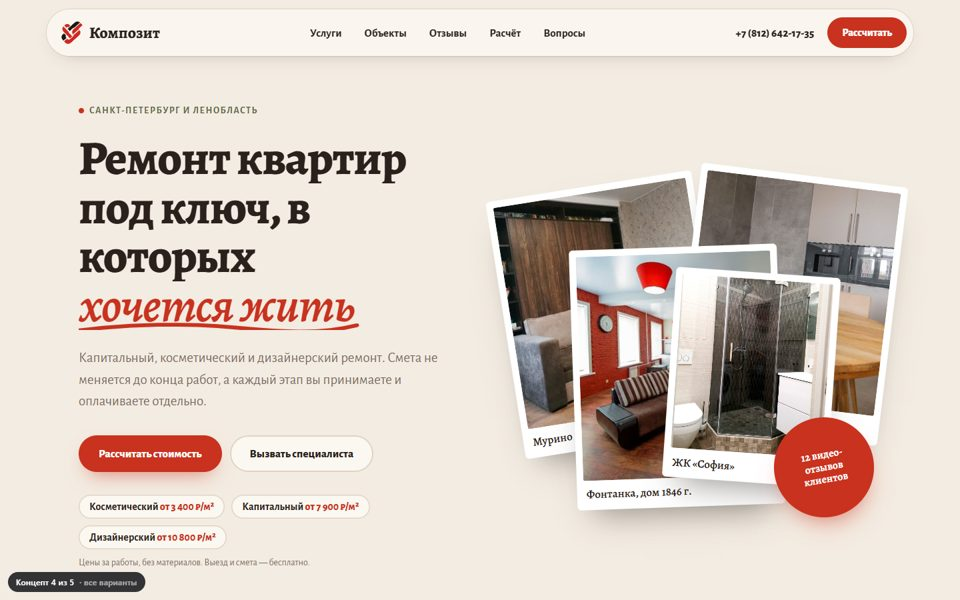
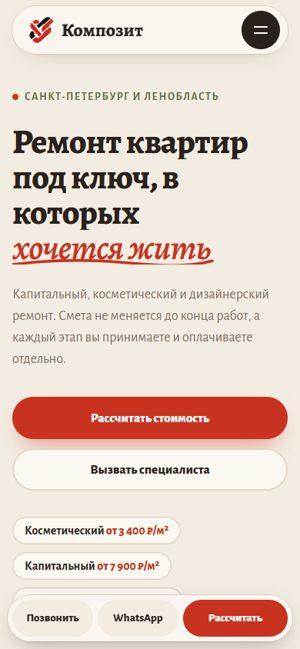
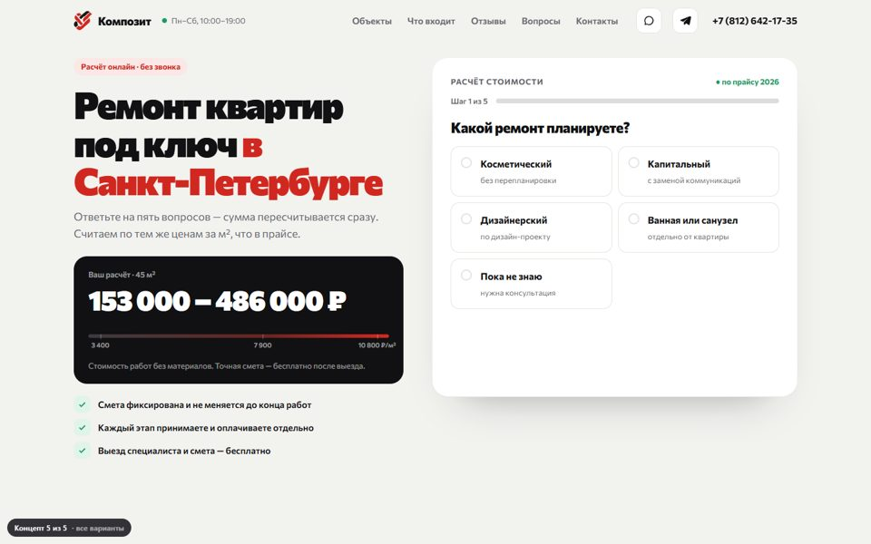
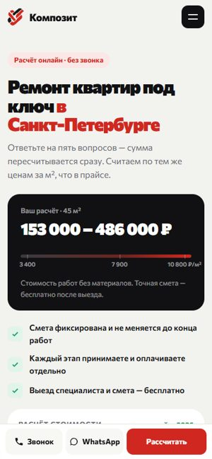

Концепт 1
«Линия»
Фирменный и смелый. Огромная типографика, красные диагональные полосы из логотипа, бегущая строка с адресами объектов.
Горизонтальное портфолио при прокрутке«До/после» на весь экранНаслаивающиеся шагиФото у курсора
Открыть →

Концепт 2
«Ночь»
Тёмный и кинематографичный. Слайд-шоу с медленным наплывом, крупные объекты с описанием, акцент на дизайн-проект.
Закреплённый текст + лента фотоСлайд-шоу на первом экранеТаблица цен с фото у курсора
Открыть →

Концепт 3
«Чертёж»
Инженерный. Фото электрики с выносками и ценами, история «Слои ремонта» при прокрутке, калькулятор по позициям прайса.
Слои: демонтаж → отделкаВыноски с ценамиПрайс-калькуляторЖурнал объектов
Открыть →

Концепт 4
«Дом»
Тёплый и семейный. Фото «веером», как на столе, линия от руки, вкладки «С чем вы пришли», лица клиентов бегущей лентой.
Веер фото за курсоромВкладки ситуацийЛента лиц клиентовЛиния этапов
Открыть →

Концепт 5
«Расчёт»
Как приложение. Квиз на первом экране, сумма «докручивается» вживую, маркер на шкале цен, график объектов по районам.
Живая суммаШкала ценРайоны → фильтр объектовСравнение видов ремонта
Открыть →